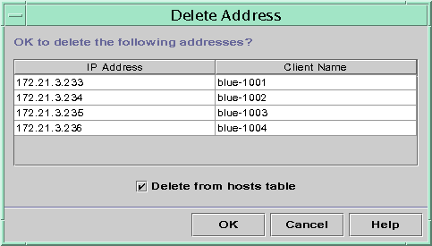
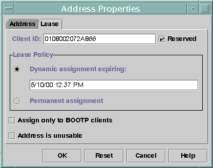

Previous
Previous
Marking IP Addresses as Unusable by the DHCP Service
You can use the pntadm -M command with the -f UNUSABLE option to mark addresses as unusable.
In DHCP Manager, you use the Address Properties dialog box, shown in Figure 15-10, to mark individual addresses. You use the Modify Multiple Addresses dialog box, show in Figure 15-11, to mark multiple addresses, as described in the following procedure.
 How to Mark IP Addresses as Unusable (DHCP
Manager)
How to Mark IP Addresses as Unusable (DHCP
Manager)
In DHCP Manager, select the Addresses tab.
See How to Start and Stop DHCP Manager for information about DHCP Manager.
Select the IP address's network.
Select one or more IP addresses to mark as unusable.
If you want to mark more than one address as unusable, press the Control key while you click with the mouse to select multiple addresses. You can also press the Shift key while you click to select a block of addresses.
Choose Properties from the Edit menu.
The Address Properties dialog box or the Modify Multiple Address dialog box opens.
If you are modifying one address, select the Lease tab.
Select Address is Unusable.
If you are editing multiple addresses, select Mark All Addresses Unusable.
Click OK.
How to Mark IP Addresses as Unusable (pntadm)
Become superuser or assume a role or user name that is assigned to the DHCP Management profile.
For more information about the DHCP Management profile, see Setting Up User Access to DHCP Commands.
Roles contain authorizations and privileged commands. For more information about roles, see "Configuring RBAC (Task Map)" in System Administration Guide: Security Services.
Mark IP addresses as unusable by typing a command of the following format:
# pntadm -M ip-address -f UNUSABLE network-address
For example, to mark address 10.64.3.3 as unusable, type:
pntadm -M 10.64.3.3 -f UNUSABLE 10.64.3.0
Deleting IP Addresses From the DHCP Service
You should delete IP addresses from the DHCP network tables if you no longer want the address to be managed by DHCP. You can use the pntadm -D command or DHCP Manager's Delete Address dialog box.
The following figure shows the Delete Address dialog box.
Figure 15-12 Delete Address Dialog Box in DHCP Manager
How to Delete IP Addresses From DHCP Service
(DHCP Manager)
In DHCP Manager, select the Addresses tab.
See How to Start and Stop DHCP Manager for information about DHCP Manager.
Select the IP address's network.
Select one or more IP addresses to delete.
If you want to delete more than one address, press the Control key while you click with the mouse to select multiple addresses. You can also press the Shift key while you click to select a block of addresses.
Choose Delete from the Edit menu.
The Delete Address dialog box lists the address that you selected so that you can confirm the deletion.
If you want to delete the host names from the hosts table, select Delete From Hosts Table.
If the host names were generated by DHCP Manager, you might want to delete the names from the hosts table.
Click OK.
How to Delete IP Addresses From the DHCP
Service (pntadm)
Become superuser or assume a role or user name that is assigned to the DHCP Management profile.
For more information about the DHCP Management profile, see Setting Up User Access to DHCP Commands.
Roles contain authorizations and privileged commands. For more information about roles, see "Configuring RBAC (Task Map)" in System Administration Guide: Security Services.
Delete IP addresses by typing a command of the following format:
# pntadm -D ip-address options network-address
If you include the -y option, the host name is deleted from the name service that maintains the host name.
For example, to delete address 10.64.3.3 from network 10.64.3.0, and delete the corresponding host name, type:
pntadm -D 10.64.3.3 -y 10.64.3.0
Assigning a Reserved IP Address to a DHCP Client
The Solaris DHCP service attempts to provide the same IP address to a client that has previously obtained an address through DHCP. However, sometimes an address has already been reassigned to another client.
Routers, NIS or NIS+ servers, DNS servers, and other hosts that are critical to the network should not be DHCP clients. Hosts that provide services to the network should not rely on the network to obtain their IP addresses. Clients such as print servers or file servers should have consistent IP addresses as well. These clients can receive their network configurations and also be assigned a consistent IP address from the DHCP server.
You can set up the DHCP server to supply the same IP address to a client each time the client requests its configuration. You reserve the IP address for the client by manually assigning the client's ID to the address that you want the client to use. You can set up the reserved address to use either a dynamic lease or a permanent lease. If the client's address uses a dynamic lease, you can easily track the use of the address. A diskless client is an example of a client that should use a reserved address with a dynamic lease. If the client's address uses a permanent lease, you cannot track address use. Once a client obtains a permanent lease, the client does not contact the server again. The client can obtain updated configuration information only by releasing the IP address and restarting the DHCP lease negotiation.
You can use the pntadm -M command or DHCP Manager's Address Properties dialog box to set up lease properties.
The following figure shows the Lease tab of the Address Properties dialog box, which is used to modify the lease.
Figure 15-13 Address Properties Lease Tab in DHCP Manager
How to Assign a Consistent IP Address to
a DHCP Client (DHCP Manager)
In DHCP Manager, select the Addresses tab.
See How to Start and Stop DHCP Manager for information about DHCP Manager.
Select the appropriate network.
Double-click the IP address that you want to the client to use.
The Address Properties window opens.
Select the Lease tab.
In the Client ID field, type the client ID.
The client ID is derived from the client's hardware address. See the Client ID entry in Table 15-4 for more information.
Select the Reserved option to prevent the IP address from being reclaimed by the server.
In the Lease Policy area of the window, select Dynamic or Permanent assignment.
Select Dynamic if you want the client to negotiate to renew leases, which enables you to track when the address is used. Because you selected Reserved, the address cannot be reclaimed even when a dynamic lease is assigned. You do not need to specify an expiration date for this lease. The DHCP server calculates the expiration date by using the lease time.
If you select Permanent, you cannot track the use of the IP address unless you enable transaction logging.
Click OK.